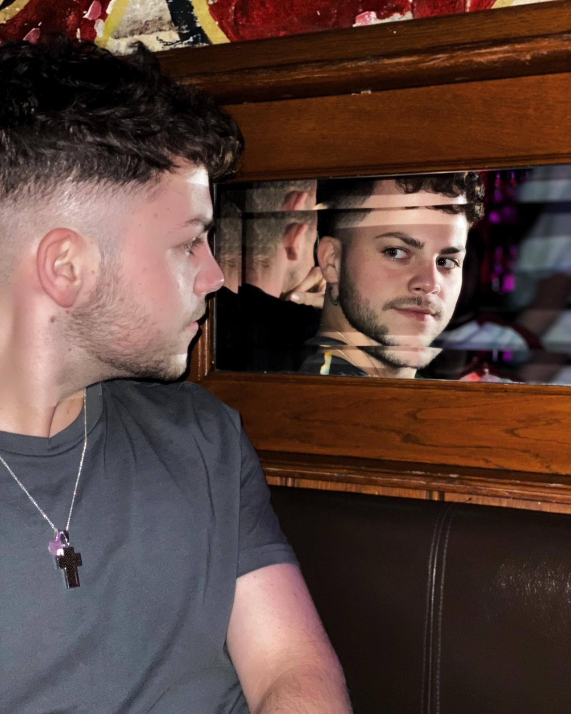
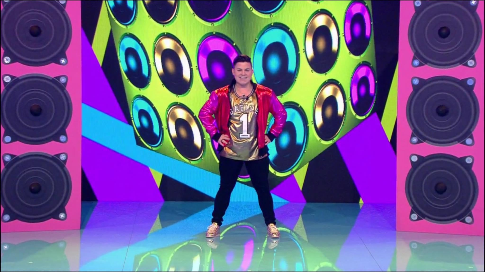

Over mij
Nu heb je misschien al een aantal dingen gelezen over wat ik kan en doe, maar ik heb je eigenlijk nog niks over mijzelf verteld. Wil je meer over mij weten? Dan zit je op de juiste pagina!
Wie ben ik?
Mijn naam is dus Fabiano Erdas, 22 jaar en oorspronkelijk kom ik uit Brunssum, Limburg. Ik ben sinds maart 2020 vershuid naar Rotterdam en ik studeer nu aan het Techniek College in Rotterdam.
Wat heb ik al gedaan?
Voor dat ik verhuisde naar Rotterdam heb ik ook een andere opleiding gevolgd in Limburg, namelijk Artiest Acteur op het MBO. Naast dat computers en software iets is wat ik heel interessant vind, is acteren en dansen ook een passie van mij. Ik heb met mijn vorige opleiding veel voorstelling op school gespeeld en ook gewerkt als acteur bij Walibi Holland tijdens Halloween Fright Nights. Mijn hoogte punt was toch zeker wel mijn deelname aan het progrmma Playback je gek op RTL 4. Verder heb ik ook heel lang op dansles gezeten en een aantal danswedstrijden en optredens gedaan.
Wat wil ik bereiken?
Ik wil later heel graag voor bedrijven websites gaan maken, en ik wil het ook zo mooi en toegankelijk mogelijk maken voor iedereen. Buiten dat om zou ik ook nog heel graag iets willen doen met dansen en acteren.
Hopelijk heb ik je zo wat meer informatie gegeven over wie ik ben. Wil je nog iets anders weten? Dan kan je altijd contact met mij opnemen via de contact pagina.
 